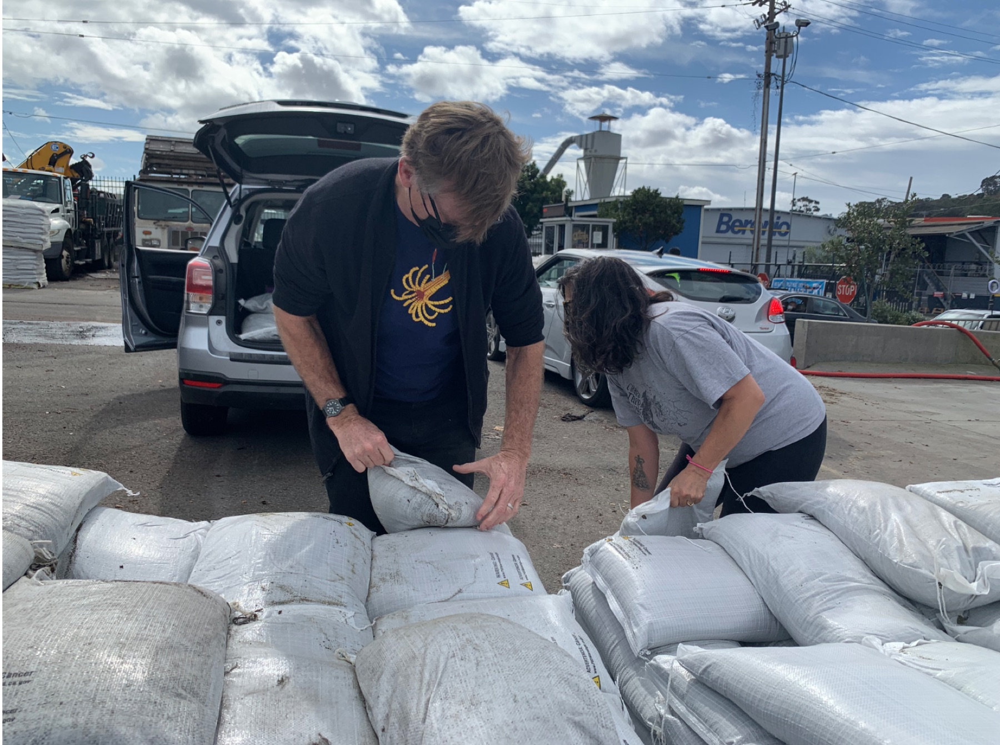
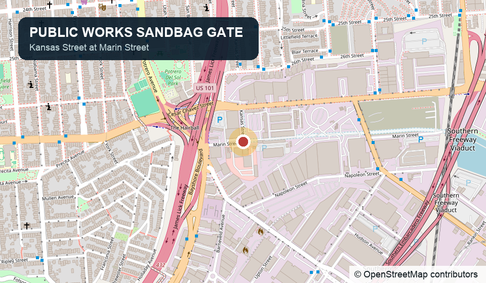

Stop or redirect shallow water
Use sandbags, a purpose-built flood barrier, or heavy plastic supported by sandbags. Tape is only a secondary seal.
Practical neighborhood preparation
A standard garden hose and the right low-profile pump can move shallow water outside. Add a real barrier at the door, then keep a fused 12-volt backup ready if the power fails.

Use sandbags, a purpose-built flood barrier, or heavy plastic supported by sandbags. Tape is only a secondary seal.
Put a low-profile pump at the garage low point and run the shortest practical 3/4-inch garden hose outside.
Use a working GFCI receptacle and dry connections. Never stand in water to plug in, unplug, or handle an energized pump.
Five feet uphill?
A pump’s “maximum head” is the height where flow falls toward zero. Five vertical feet plus a long garden hose can be much harder than five feet alone. Keep the hose short, unkinked and as large as the pump permits.
Good for inexpensive emergency removal when someone is present. It includes a short drain hose; confirm the included adapter before assuming your garden hose screws directly on.
See the AgiiMan pumpFits a 3/4-inch garden hose and pumps from a shallow floor. The manual version must be unplugged when water stops moving.
Find WaterBUGFits a standard garden hose, starts near 1⅝ inches of water, and pumps down to about ½ inch. This is the easiest ready-to-use garage-floor option.
Official specificationsStop if water may reach outlets, a panel, appliances, EV equipment or energized wiring. Do not enter the water. Call 911 for immediate danger and PG&E or a licensed electrician for electrical hazards. Floodwater containing sewage, fuel or chemicals should not be pumped into the street.
Power-outage backup
The Rule LoPro LP900S is a low-profile automatic marine pump rated at 900 GPH, 4 amps and a 7.5-amp fuse. With its 3/4-inch outlet, the official curve shows reduced—but useful—flow around a five-foot rise.
Use a deep-cycle AGM or LiFePO4 battery, not a car starting battery. Mount the battery, fuse, switch and connections above the possible waterline. The pump uses marine hose-barb fittings; adapting to a narrow garden hose costs flow.
Threshold sealing
Use heavy plastic, sandbags or a purpose-built barrier to carry water pressure. Tape the edges only after the concrete and trim are clean and dry.
Best grip on rough, dry concrete and trim. DuPont StraightFlash uses a 100% butyl adhesive and may be installed at 25°F or warmer, but DuPont requires approved primer on concrete and masonry.
Very aggressive: it can leave residue, stain porous concrete and pull paint or finishes. Test first.
Easier to find quickly. Use wide Flex Tape on smooth metal or sealed trim, or over plastic sheeting. Rough concrete and large gaps need more than tape alone.
Flex Seal itself says removal may require pliers and adhesive remover. It can leave residue or a shadow on porous surfaces. Test first.
Watch the door-sealing example Kevin shared—use it as an idea, not proof that a specific door is safe.
San Francisco sandbags
2323 Cesar Chavez Street
Enter at the Kansas Street and Marin Street gate.
Official hours: Monday–Saturday, 8 AM–2 PM. Up to 10 free sandbags per San Francisco home or business address; bring proof of address and expect to load them yourself while supplies last.
Closed today, Sunday, November 22. This is not acceptable during a declared coastal-flood emergency. Sunday is exactly when many residents are off work and able to prepare. If the City calls this an emergency, it should treat it like one by staffing emergency sandbag access when people can actually use it. Call 311 to report the gap; if protection cannot wait, buy filled bags or flood-barrier supplies locally.

Red dot: Kansas & Marin entranceNeighbor help
Kevin Graehl is an engineer and technical builder with 30 years of construction experience. He can help neighbors choose and stage pump systems, garden-hose routing, and fused 12 V automatic backup arrangements. This is practical neighbor assistance, not stamped civil or electrical engineering.
WAYNE WaterBUG AUTO performance · WaterBUG manual and five-foot flow · Rule LoPro current and fuse · SF Public Works sandbags · DuPont StraightFlash · Flex Seal FAQ